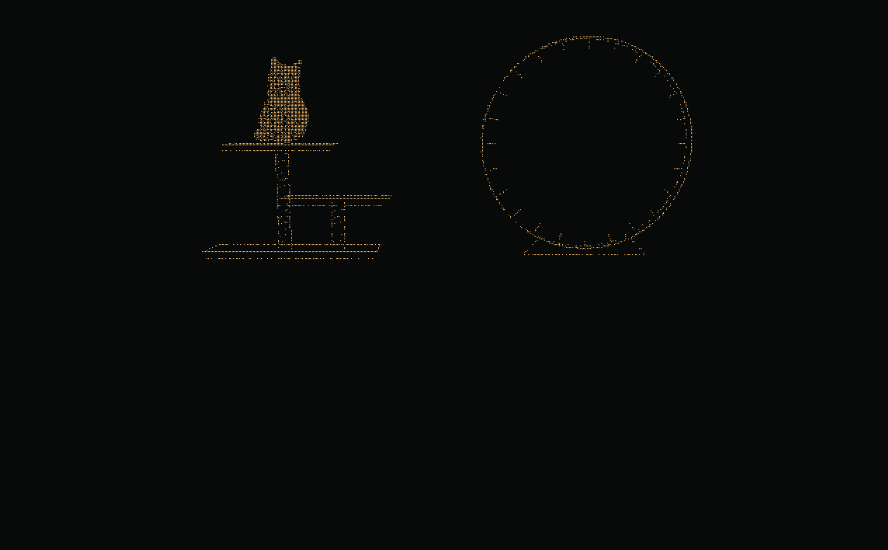

A little company.
For your screen.
I got bored staring at a terminal, so I made a dog.
Bring one homeRuns locally, without an account or model API.
There is a cat here, too.Getting your retriever ready…
retrieviewer desktop --ink cream
retrieviewer desktop --return-style auto
Same art, same movement engine. Play loads about 19 MB.
Let it be a dog.
It explores near and far, then picks a spot for a nap. Sometimes it chases a butterfly. Toss a ball, offer a treat or play tug when you feel like it.
A separate, transparent native window. Ordinary clicks pass through. It follows your selected app window and hides when you switch away, leaving your editor and terminal untouched.
I made a cat, too.
PurrviewerA slow blink, a little kneading. Then off to the cat tower or exercise wheel.

Meet the cat to begin. Nothing to install.
Browser preview · About0.6MB of cat artwork. On desktop: retrieviewer desktop --pet cat.
Cat demo credits & artwork terms
Two commands.
One new companion.
npm · v0.0.25
Run in a terminal on the computer displaying your app. Next time, only the second command is needed.
-
Install or update
npm install -g @bitefoundry/retrieviewer@latest -
Run, choose an app window, then click Attach
retrieviewer desktop
The desktop window picker and controls use English.
0.0.25 · Smoother ball pickup and release. The dropped ball stays on the floor. Update notes
Don't have Node.js / npm yet?
Install a maintained Node.js release with npm from the official download page, then reopen your terminal. Node 22.23.4 is our tested AlmaLinux 8 baseline; the package requires Node 20+.
Get Node.js from the official source ↗AlmaLinux 8 administrators can check the nodejs:22 module stream. Don't reset an existing company-managed stream without approval.
sudo dnf module install nodejs:22Full prerequisites, shell-specific PATH fixes and desktop
libraries ↗
Try with npx / “command not found”
With Node/npm installed, try once without a global install. npx does not permanently add a retrieviewer command to PATH. For that, use the global install above.
npx --yes --package @bitefoundry/retrieviewer@latest retrieviewer
desktop
Already installed globally? Check npm prefix -g. Linux/macOS executables live in that prefix's bin directory; Windows uses the prefix itself. csh/tcsh and bash need different PATH syntax.
Find the right PATH fix for your shell ↗Support
- Windows 10/11
- Live tested · x64, Node20+. Basic mode uses the bundled native engine.
- Linux X11
- AlmaLinux 8 / GLIBC 2.28 tested in an isolated composited desktop. Needs Python 3.6+, X11/Xrender/Xext and a compositor.
- macOS
- Experimental. No real-Mac runtime verification yet.
- Wayland / SSH
- No native Wayland overlay or headless display. Remote X11/VNC uses that remote desktop, not the local IDE.
Windows basic mode uses one native process. StackBite/LLM watching uses the higher-memory compatibility engine. Linux keeps Node/Python. 4K, 35-second tests (median / peak): dog 20.9 / 37.4 MiB; cat 46.0 / 63.8 MiB. Memory depends on window size and activity.
Requirements and actual verification ↗Easy to leave, too.
Quit from its controls, or use desktop-stop.
retrieviewer desktop-stop
Remove it completely
retrieviewer desktop-remove --yes
npm uninstall -g
@bitefoundry/retrieviewer
If you separately enabled the OpenCode integration, disconnect it before uninstalling.